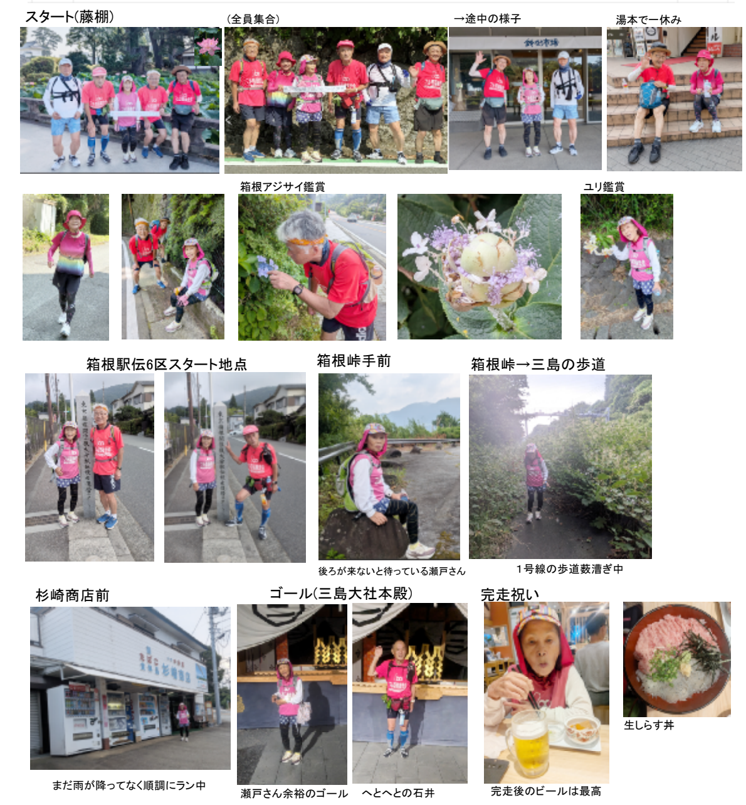

2026-07-25 12:03:20
2026年7月25日（土曜日）（場所 小田原藤棚～三島大社、天候 曇り、気温 30℃）（担当）石井
| No | 地区会員番号 | 氏名 | 種目 | タイム | フル百 |
|---|---|---|---|---|---|
| 1 | 333 | 山口 義治 | フル | 10:03:05 | 827 |
| 2 | 229 | 瀬戸 君子 | フル | 11:57:25 | 749 |
| 3 | 317 | 石井 功 | フル | 11:57:25 | 817 |
| 4 | 42 | 榎本 博康 | 15.0km | 5:18:00 | 223 |
| 5 | 403 | 飯田 和好 | 18.1km | 3:54:10 | 881 |
| 6 | 227 | 松島 八十子 | 6.0km | 1:20:00 | 748 |
コメント
気温27～31℃湿度70～80％で、この時期にしては走りやすい天候でしたが暑かったです
１号線は芦ノ湖までは除草されていたが、箱根峠から三島は除草されてなく薮漕ぎして走った
18時過ぎからゴールまで雨が降ったり止んだり状態でした
その影響で、東海道線(三島～小田原)・新幹線が運転停止になり、遅いランナーは一時帰宅困難状態になりやっと帰宅しました。
